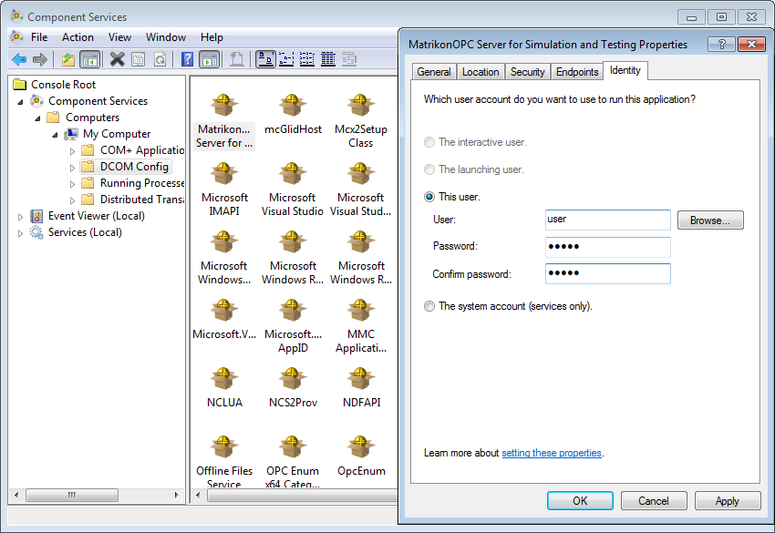

Figure 1. Selecting OPC tags
This article describes how to configure communication with devices using OPC standard. OPC is designed to provide a common bridge for the software and process control devices from different manufacturers (see Wikipedia). Rapid SCADA supports the following OPC specifications:
Rapid SCADA implementation of OPC is provided by the Communicator application, to be exact, by KpOpc.dll device library. To learn about the details of SCADA-Communicator configuring for using OPC is the goal of this article.
The general configuration sequence:
The details of the 2nd, the 4th and the 5th steps are described in the Software Configuration section. Device 21 "OPC Demo" of the default Rapid SCADA configuration is an example of using OPC. Find "OPC demo" view in Webstation to examine the received data. This example requires MatrikonOPC Explorer which includes an OPC simulation server.
Create a separate communication line for each OPC server that is used. It is the most efficient approach because it allows communicating with the OPC servers in parallel. Add devices to the communication lines. Set Undefined communication channel type for the created communication lines in Communicator.
Open device configuration form to select which OPC tags to receive from OPC server. Click the button located in the device popup menu or the Request Sequence page to open the form that is shown in Figure 1.
Figure 1. Selecting OPC tags
OPC servers installed on the local computer are available to Communicator. If data from an OPC server, installed on another computer within a network, are required, deploy an extra instance of Communicator on that computer and properly configure it to connect Server.
There are two ways how to bind OPC tags to input channels of the configuration database:
Select the way that is more suitable in a particular configuration of an automated system.
When the configuration is completed, restart the Server and Communicator services. Check OPC communication state and received data using Communicator logs (see Figure 2). If the data in Communicator seem to be true, open a browser and look for the same data in the Webstation application.

Figure 2. Values of OPC tags
Known issue of using OPC: unable to receive data from OPC server while OPC tag properties are available in the device configuration form, no error messages are raised.
Possible reason is that the Communicator service operates as system user but OPC server forbids interacting with system user.
Solution 1. Specify a user account that is used to run OPC server. To open DCOM configuration (see Figure 3), follow the path Control Panel\System and Security\Administrative Tools\Component Services or just run comexp.msc

Figure 3. DCOM configuration
Solution 2. Specify a user account that is used to run the Communicator service. Go to Control Panel\System and Security\Administrative Tools\Services or run services.msc, find ScadaCommService and open the service properties. Then enter user account and password on the Log On page as shown in Figure 4. The specified user must be a computer administrator.

Figure 4. Service properties